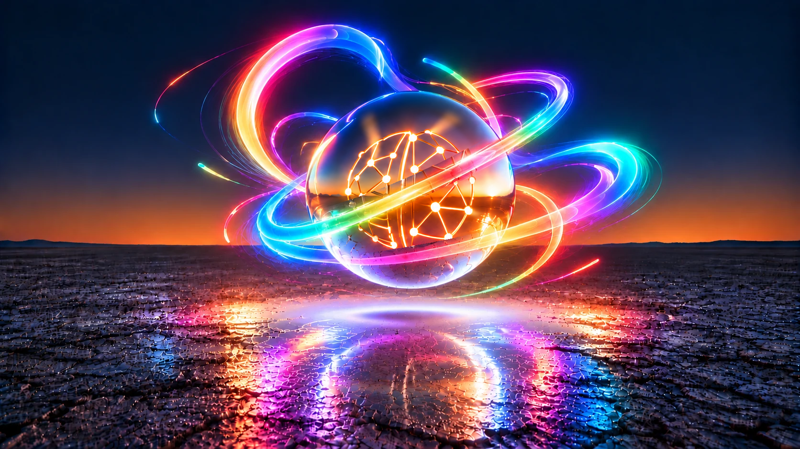
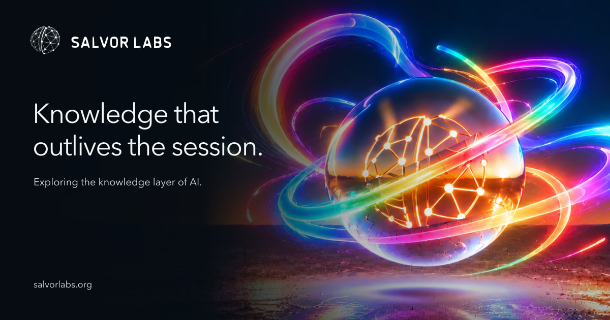
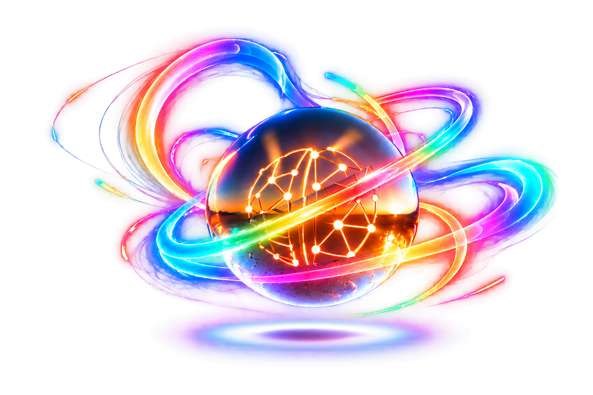
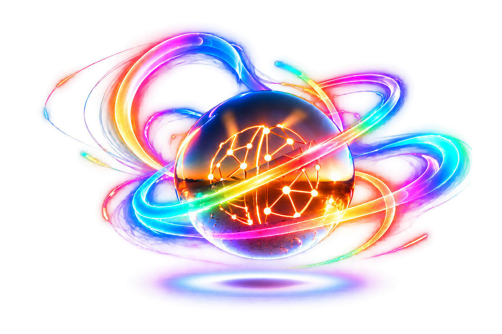
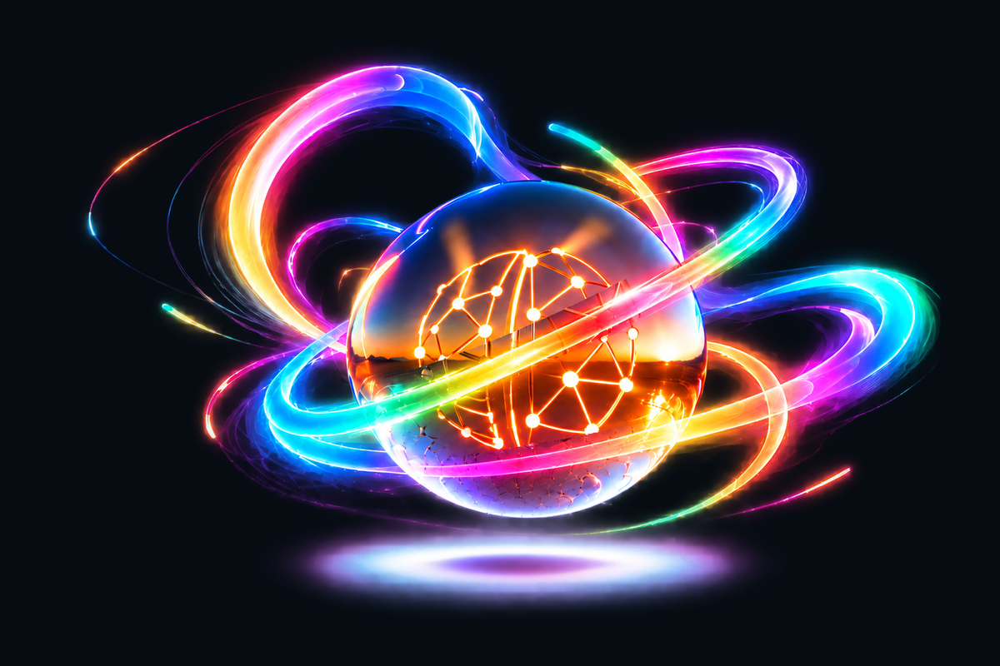

L09 · Locked hero and sharing assets
Open the updated page · Download transparent PNG · 3072×2048

Hero

Open Graph / X card

Independent transparent artwork
Sphere, swirls and lower glow. RGBA export with transparent padding; native source and export method retained.


